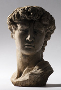
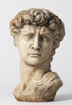
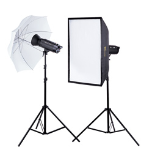
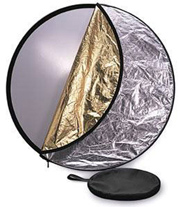
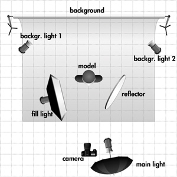

攝影棚介紹
陰影
陰影的長度和硬度是由光源到被攝體的距離，和光源的直接或間接來確定。 好比你自己的影子：在一個陽光明媚的日子，你有長而明顯的影子。在陰天，你的影子幾乎看不到。 這是因為雲層對陽光的效果和不同擴散器對攝影棚閃光燈一樣：它使光線更均勻，四處彈射在主題上。 例1顯示了一個攝影棚閃光燈直接打光的主題，稱為“主燈”。它投下了一個長而銳利的陰影。 例2有兩種閃光，各自使用柔光箱擴散。不僅使主題點亮更均勻，第二次閃光（稱為“補光”）照亮了陰影。這也正是為什麼大多數閃存套件包含兩個閃光。
 附加照明
附加燈可以用來照亮背景。 使用一個或多個額外的閃光，即可均勻地消除陰影並點亮它，或創建一個漸變效果。 對於人像拍攝，第三光（“效果燈”）經常被用來作為一個發光線，建立更深入人像，如示例3所示。

使用擴散器
大多數閃存套件配備擴散器。一個擴散器的目的是均勻分佈的光，像陰天的雲之於陽光一樣。另一個好處是減少對玻璃物體和人臉的反射，使一個人看起來吃力。 柔光箱是最常見的解決方案。它有反射銀層在裡面，它壓縮了光，然後才發出向前擴散。這使可用光充分利用。 雨傘擴散器的主要優點是它需要將其設置在小時間。這使得它非常適合於便攜式工作室。相比，柔光箱更多的光被散射，因此發光效率是不太理想。這可以通過打開閃光燈的電源時，或靠近主體重新定位它來彌補。
使用反光板
反射器是在攝影工作室使用最廣泛的工具之一。 你可以用它們來減少陰影，或反映了較亮色光在被攝體上。他們有不同的大小和形狀，有些是5合1或7合1多種顏色可供您選擇。 當你不希望使用照明設備，它們還使您能夠提供日光。
閃光燈與連續光源
連續照明提供了一個“你得到的就是你看到的”的方法。這是理想的的照片和視頻作品。拍攝模式也是可以的，但對於一個模型連續明亮的光線是不太適合的。這也使得瞳孔變小，這樣的照片不能和閃光燈一樣自然。 閃光的好處是，你不一定需要一個三腳架：採用工作室捕捉你的照片，對手震比較不敏感。這也更好捕捉瞬間運動。
你應該使用什麼相機？
你不需要一個高級的單眼相機。基本上，任何相機，可讓您手動快門速度、光圈和ISO就很好了。
你應該使用什麼相機設置？
如果你使用攝影棚閃光燈，ISO100與快門速度1/125是一個很好的起點。然後，您可以嘗試使用光圈和閃光燈輸出功率找到所需的照明值。
照明技術的結合
這張照片展示了我們上面描述的各種照明理念結合。最接近相機的是主燈，提供最主要的光源。 補光燈，在較低的功率設置，提供深度。反光板可以作為一個效果燈。它可以切換一個額外的閃光。 背景閃燈主要是消除背景的所有陰影。
如何連接攝影棚閃光燈？
所有影室閃光燈配有同步電纜。您可以連接到該相機的“X接觸”的連接器。如果你的相機不具備，也許你的camera flash gun可以。您也可以使用一個hotshoe用於與X接點裝備你的相機。
採用Slave模式閃爍
另一種方法是通過Slave模式。大多數影樓閃光燈具有內置的slave傳感器。只需打開“遠程”按鈕，在您的影樓閃光燈。當內置感應器“看見”另一個閃光，它會同時觸發閃光燈。實際上，使用“slave”模式可以讓您同時觸發無限數量的閃光。 缺點是，這不適用於設置當閃光燈相距甚遠的工作：一閃光可能看不到另一個所以它不會熄滅。
進入無線！遠程觸發
無線觸發器集是一種用於觸發攝影棚閃光燈最廣泛使用方法。這不受到障礙物干擾。所以這是觸發攝影棚閃光燈非常可靠方法。